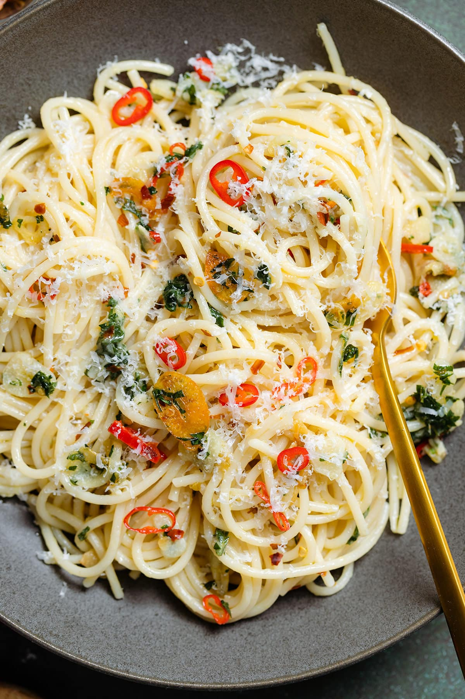

Peperoncino

Spicy version of the classic spaghetti aglio e olio
Just like the classic spaghetti Aglio e Olio, this recipe uses olive oil, garlic, and parmesan. Spaghetti Aglio e Olio translates to "spaghetti with garlic and oil". It's a popular dish from Naples, Italy. The word Peperoncino in the name of this recipe translates to "chili pepper". It's a spicy version of the classic dish most people are used to.
This recipe calls for a handful of pantry staples, parmesan, garlic, and fresh parsley. If you don't have fresh parsley, you could also use dried parsley. This makes it the perfect SOS dinner when you have an empty fridge but still want something delicious.
Ingredients
- Spaghetti
- Extra virgin olive oil
- Garlic
- Chilli peppers
- Parsley
- Pecorino
Instructions
- Bring a large pot of lightly salted water to a boil. Cook spaghetti in the boiling water, stirring occasionally, until tender yet firm to the bite, about 12 minutes.
- Meanwhile, heat oil in a large skillet or wok over medium heat.
- Add garlic to the oil and cook until just warmed through, 1 to 2 minutes. Add chile pepper and stir together, reducing the temperature to medium-low. Continue stirring. The garlic should never become dark brown or crispy. If this has happened, the garlic is burnt and no longer appropriate for consumption.
- Drain the pasta, reserving at least 1 cup pasta water. Add the spaghetti to the oil mixture, still on medium-low heat. Stir or toss until all the spaghetti is well coated. Add 3/4 of the bottarga and stir to mix with the spaghetti, adding the reserved pasta water to hydrate as needed. There should be a little "sauce" when serving but not soupy.